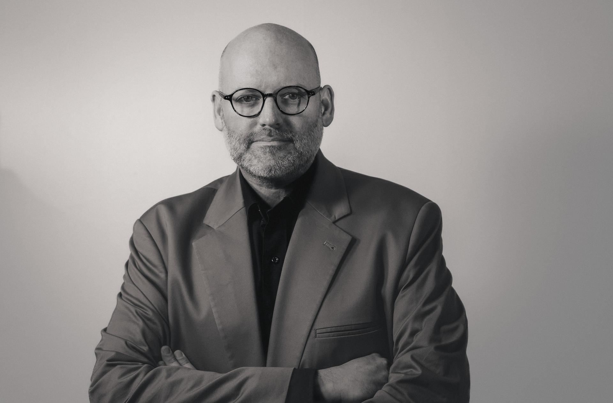

Small practice.
Expansive thinking.
DRIFT is an independent landscape architecture studio based in Portland, Oregon. The practice brings curiosity, creativity, and a considered approach to designing distinctive, meaningful places.
Ideas grounded in place.
Every site presents its own opportunities and constraints, shaped by its natural systems, history, architecture, and the patterns and rhythms of daily life. DRIFT seeks to understand these relationships and develop design responses that are both rooted in their surroundings and ambitious in vision.
The work favors clear, compelling ideas over unnecessary complexity, with an appreciation for moments of discovery, thoughtful materials, and attention to detail.
Designed to change.
Landscapes are never static. Plants mature, materials weather, and patterns of use shift. DRIFT strives to provide a lasting framework that anticipates these changes while allowing nature and human experience to shape a place in unexpected ways.
Places for people.
Landscape has the power to restore, inspire, and enrich our lives, offering refuge, fostering connection, and creating opportunities for people to engage more fully with their surroundings. From intimate gardens to public spaces, DRIFT seeks to create environments that support well-being, encourage interaction, and bring meaning to everyday experiences.
In publically shared spaces, these qualities take on a broader significance. Thoughtful design can remove barriers, invite participation, and cultivate a sense of comfort, dignity, and belonging in the public realm.
The practice.

Founded in 2025 by Tim Strand, PLA, ASLA, DRIFT daws on more than two decades of professional experience and a commitment to thoughtful, engaging landscape design. As an independent practice, DRIFT offers a collaborative, hands-on approach, with direct involvement from concept through construction.
Tim's experience spans residential, parks, civic, institutional, and infrastructure projects throughout the Pacific Northwest and California. He holds a Master of Landscape Architecture from the University of California, Berkeley, and a Bachelor of Science in Natural Resources and Environment from the University of Michigan.
DRIFT is a COBID-certified Emerging Small Business and holds professional licensure in Oregon.